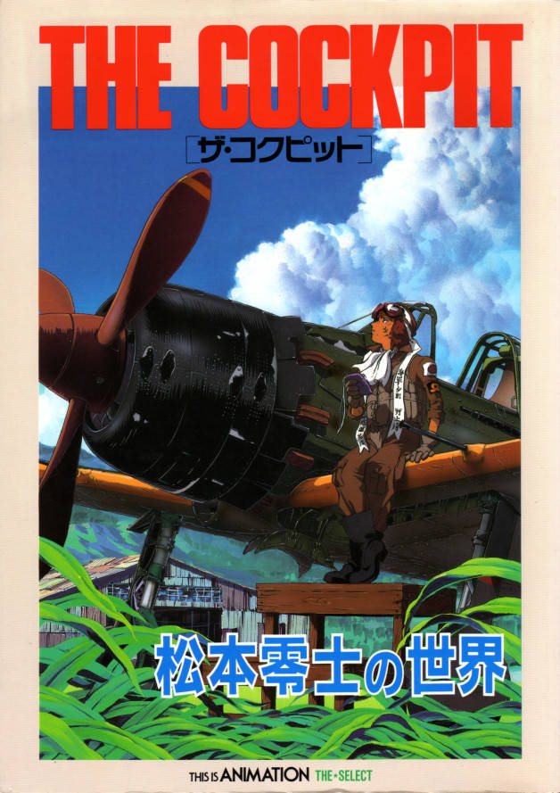

| The Cockpit | |
|---|---|
| Trailer | Original Poster |
|  | |
|
- Plot : Kawajiri's Slipstream follows a Luftwaffe pilot on his mission
to protect Germany's trump card: the world's first atomic bomb. Imanishi's Sonic Boom Squadron explores the last hours of a Yokosuka MXY-7 Ohka pilot on August 6, 1945. Takahashi's Knight of the Iron Dragon tells the story of two Japanese soldiers in Leyte as they attempt to keep a promise. - Segment by Kawajiri : Slipstream (n°1) - Japenese title : ザ・コクピット - Genre : Historical - Directed by : Yoshiaki Kawajiri / Takashi Imanishi / Ryōsuke Takahashi - Music by : Masahiro Kawasaki / Akira Inoue / Kaoru Wada (full OST > HERE) - Running time : 30min (x3) - Production : Madhouse animation studio / Jacom / Visual 80 - Release date : 22 October 1993 |
|